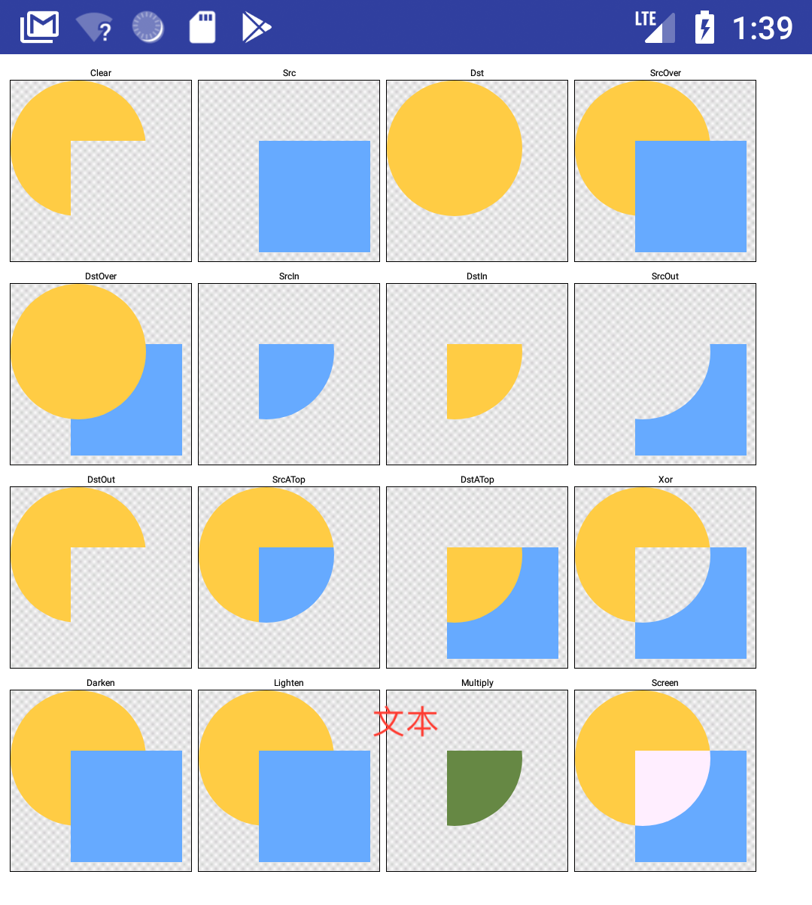
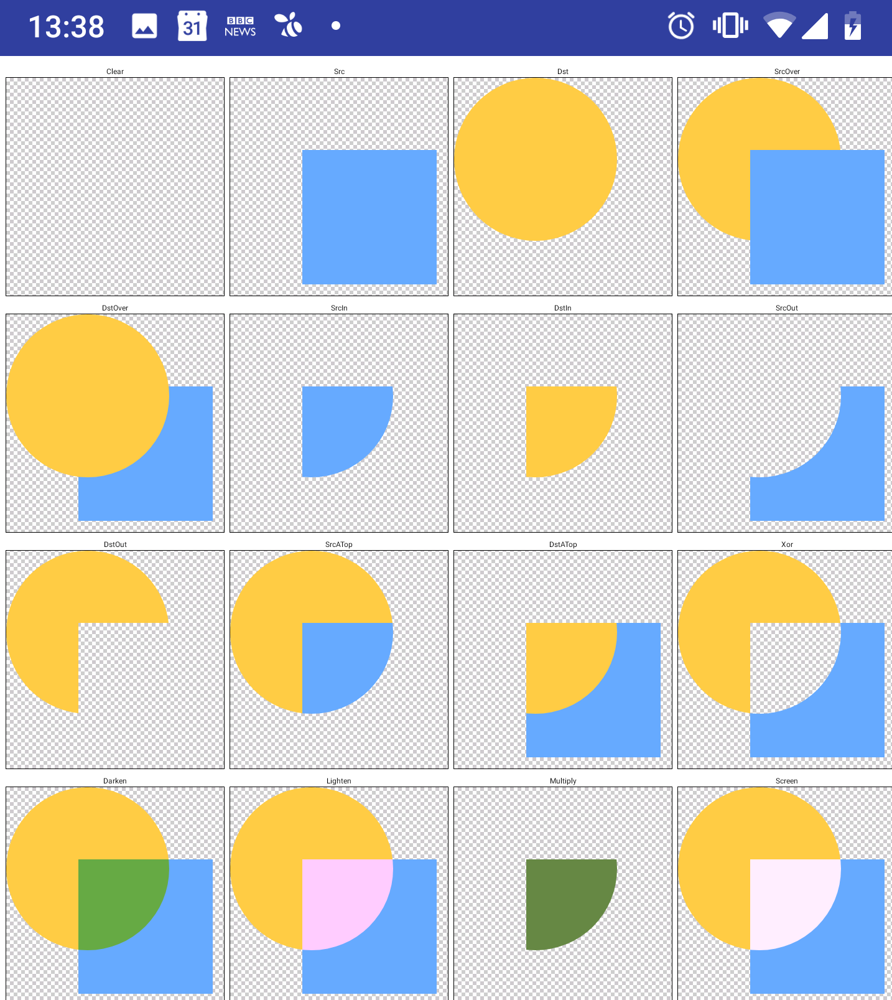

PorterDuffXfermode的一些使用问题
PorterDuffXfermode的一些使用问题
一 PorterDuff.Mode使用问题
1.1 PorterDuff.Mode.CLEAR

1.2 PorterDuff.Mode
PorterDuff.Mode 官方效果
https://developer.android.com/reference/android/graphics/PorterDuff.Mode.html
1.2 PorterDuffXfermode 在Android 27 和 28 的实际效果
PorterDuffXfermode_27

PorterDuffXfermode_28

图片来源
二 绘制2时 canvas 画布不同导致的问题
after change another canvas ,PorterDuffXfermode(PorterDuff.Mode.CLEAR) is not work
创建 另一个 画布
1
2
3
| //保存没有背景的截图
screenShotBitmap = Bitmap.createBitmap(width, height, Bitmap.Config.ARGB_8888)
mScreenShotCanvas = Canvas(screenShotBitmap)
|
dispatchDraw
1
2
3
4
5
6
7
8
9
10
11
12
13
14
15
16
17
18
19
20
21
22
|
override fun dispatchDraw(canvas: Canvas?) {
...
//7.绘制蒙版
drawMask(canvas)
....
//截图
mScreenShotCanvas?.let { canvas ->
...
//7.绘制蒙版
drawMask(canvas, true)
...
}
...
}
|
问题 传入的canvas 不同
1
2
3
4
5
6
7
8
9
10
11
12
13
14
15
16
17
18
19
20
21
22
23
24
25
26
27
28
29
30
31
32
33
34
35
36
37
38
39
40
41
42
43
44
45
46
47
48
49
50
51
52
53
54
55
56
57
58
59
60
61
62
63
64
| /**
* 绘制蒙版
*
*/
private fun drawMask(canvas: Canvas, shotScreen: Boolean = false) {
try {//qtip rl_frame_content -> 相框外层容器
rl_frame_content?.let {
//先获取相框外层容器的位置
val rlLeft = it.left
val rlTop = it.top
mGpuIV?.let { gpuIv ->
mMaskBitmap?.let { mask ->
//获取相片和相框外侧之间的位置关系
val gpuIvLeft = rl_gpu_iv_content_trim.left
val gpuIvTop = rl_gpu_iv_content_trim.top
val gpuIvWidth = rl_gpu_iv_content_trim.width
val gpuIvHeight = rl_gpu_iv_content_trim.height
val newWidth = gpuIvWidth - 2 * mMaskMargin
val newHeight = gpuIvHeight - 2 * mMaskMargin
//缩放后的蒙版(根据图片的大小调整蒙版大小)
if (mScaledMaskBitmap == null) {
mScaledMaskBitmap = BitmapUtils.scaleBitmapInMaxWidthOrHeight(mask, newWidth, newHeight)
}
mScaledMaskBitmap?.let { scaleMask ->
//绘制mask
val left = rlLeft.toFloat() + gpuIvLeft
val top = rlTop.toFloat() + gpuIvTop
//1.离屏画布
val save = canvas.saveLayer(left, top, left + gpuIvWidth, top + gpuIvHeight, null, Canvas.ALL_SAVE_FLAG)
//2.绘制带颜色蒙版 创建大小和 rl_frame_content 一样的蒙版
val dstBitmap = Bitmap.createBitmap(width, height, Bitmap.Config.ARGB_8888)
//创建蒙版画布
val dstCav = Canvas(dstBitmap)
//蒙版颜色
dstCav.drawColor(mMaskColor)
canvas.drawBitmap(dstBitmap, left, top, null)
//3.蒙版掏空出透明形状区域
val paintMask = Paint()
paintMask.isAntiAlias = true
paintMask.xfermode = PorterDuffXfermode(PorterDuff.Mode.CLEAR)
//蒙版位置居中
canvas.drawBitmap(scaleMask, left + (gpuIvWidth - scaleMask.width) / 2, top + (gpuIvHeight - scaleMask.height) / 2, paintMask)
//4.画布恢复
canvas.restoreToCount(save)
} }
}
}
} catch (e: Exception) {
QLogger.e(e)
}
}
|
需要的效果

截图时实际效果

并不是 paintMask.xfermode = PorterDuffXfermode(PorterDuff.Mode.CLEAR)
无效 而是 clear的区域不是 图片的非透明区而是 整个图片
// QTIP: 2019-07-23 修改
为 PorterDuff.Mode.DST_OUT 或者 PorterDuff.Mode.XOR
待解决疑问 : Android api 28 以下 传入有bitmap的canvas 绘制时 PorterDuff.Mode.CLEAR 无效
参考
https://stackoverflow.com/questions/51538443/xfermode-in-android-p-beta?noredirect=1#comment90044905_51538443
https://stackoverflow.com/questions/10494442/android-paint-porterduff-mode-clear?rq=1
https://issuetracker.google.com/issues/111819103
https://stackoverflow.com/questions/56189189/android-in-android-pie-api-28-radialgradient-draws-a-rectangle-instead-of-a?rq=1
https://android.googlesource.com/platform/development/+/master/samples/ApiDemos/src/com/example/android/apis/graphics/Xfermodes.java
关联下 ViewOutlineProvider
1
2
3
4
5
| /**
* Interface by which a View builds its {@link Outline}, used for shadow casting and clipping.
*/
public abstract class ViewOutlineProvider {
...
|